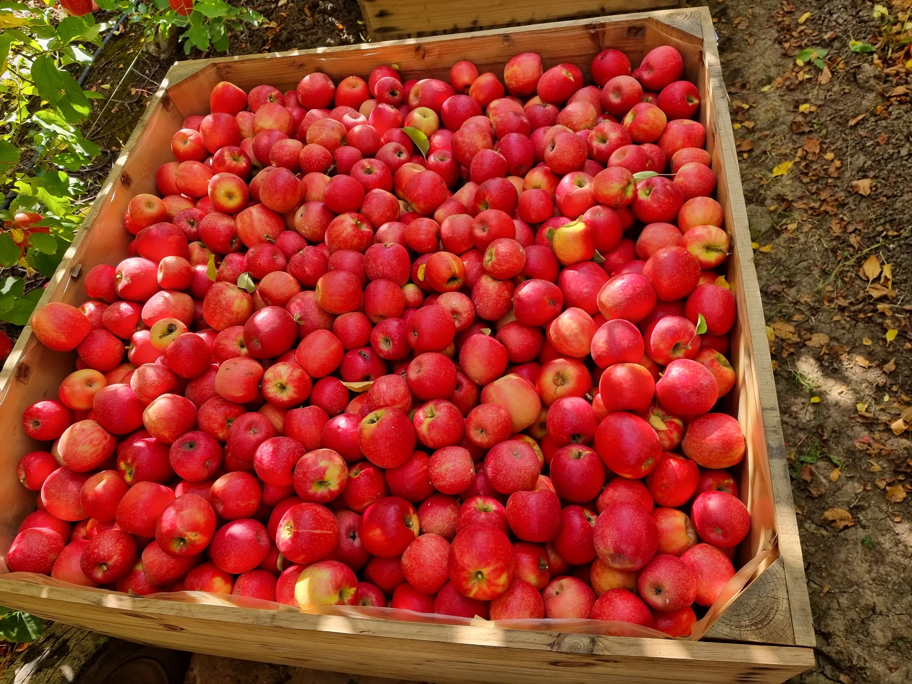
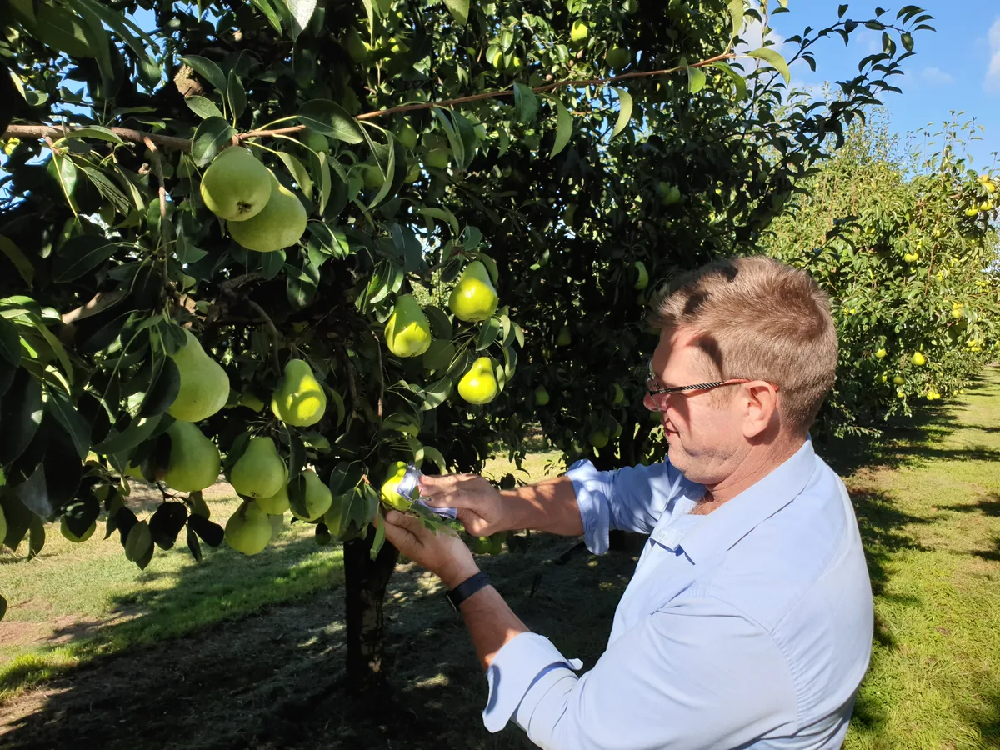
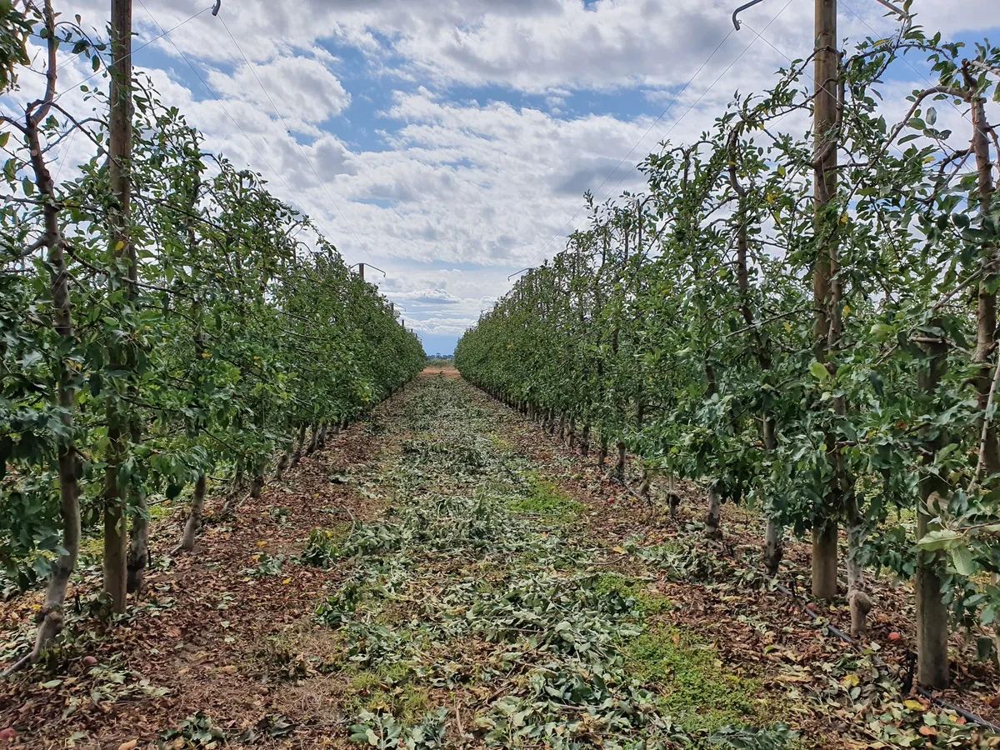

Yield and crop load
Harvest quantity, the area it came from and crop load help describe the season. Where earlier figures are available, compare the same block and variety rather than treating different crops as a direct comparison.

Look at yield and fruit quality alongside your test results and block history. Hybrid-Ag can help review what worked, what needs attention and whether a prescription blend is needed before next season.

Once the crop is off, there is an opportunity to look at how the season went while the details are still fresh. The quantity harvested matters, but so do the quality of the fruit and the feedback from your market.
Start with what you wanted to achieve and compare it with what happened. If you changed the nutrition, review the applications alongside the harvest results and the conditions on the block. We can then discuss which applications to retain and where more information is needed.
Back to ResourcesYou do not need a complete set of records to start the discussion. Bring what is available and tell us where the crop met your expectations or fell short.
Harvest quantity, the area it came from and crop load help describe the season. Where earlier figures are available, compare the same block and variety rather than treating different crops as a direct comparison.
Look at grading and pack-out, with any measurements of fruit size, colour, firmness or Brix. Market feedback, storage and shelf-life results can add to the review as they become available.
Your observations help explain the results. Discuss canopy condition, harvest timing and any weather or irrigation difficulties, including differences between blocks.
Bring existing soil and plant reports with sample details, together with any records of blends, application rates and dates. Review these against the crop results and the cost of the inputs.
A better or poorer harvest does not, on its own, prove that nutrition caused the change. Crop load, weather, irrigation and harvest or storage conditions also need to be considered.

In deciduous orchards and vineyards, active leaves can continue photosynthesis after harvest. Stored reserves contribute to early spring growth, so the period before leaf fall deserves attention.
What is practical depends on the crop, harvest date and canopy condition, as well as the weather and available water. A late-harvested block may need a different approach from one picked earlier. There is no single post-harvest application that suits every block.
Existing test results can help inform the discussion, but a soil, tissue or sap report does not by itself measure stored carbohydrate reserves. If another sample would help answer a specific question, the team can advise on the test and timing.
Before repeating the same applications, review what the soil and crop need now and what you want to achieve next season. Hybrid-Ag uses your results and block history to develop a custom or prescription blend where one is appropriate.
The recommendation also needs to suit your budget, application equipment and the time available. Discuss what can be done after harvest and what is better planned for a later stage, rather than following a fixed calendar.
Keep the original reports and application details together. As further test, pack-out or storage results come in, they can be added to the review and used when making the next decision.
Tell us about the crop you have just harvested, the results you already have and what you want to improve. We will discuss the available information and the next useful step for your block.
Review of existing data is free. If new laboratory testing or sampling would help, we will explain the recommended sample, timing and cost before anything proceeds.
Prefer to talk it through? Call us on (03) 5722 8000.